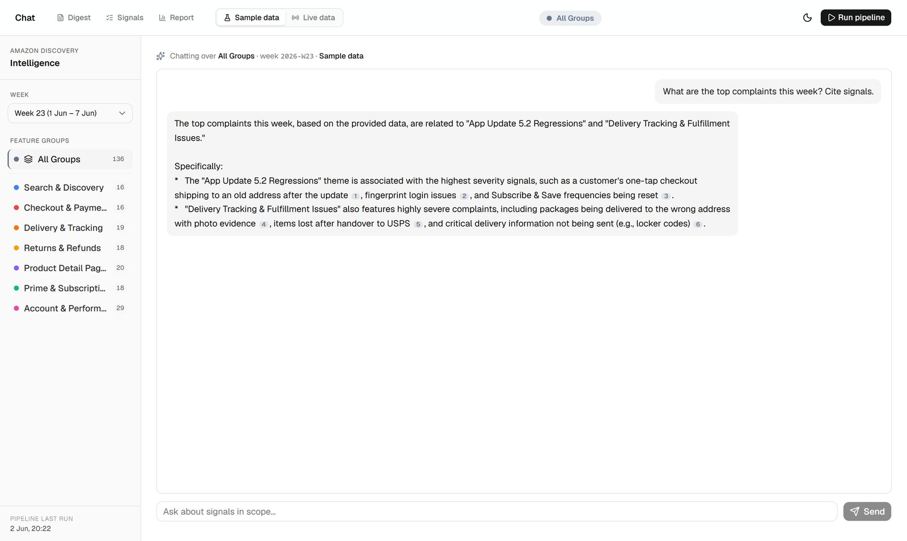

← All work
Amazon Discovery Intelligence
An agentic pipeline that reads a week of customer complaints and hands a PM a ranked, cited backlog. Thirteen steps, running on a schedule.
13-step
agentic AI pipeline
raw reviews in, a ranked and cited backlog out
ProblemA PM cannot read every review, so they skim. Skimming feels fine because you never find out what you missed. The complaint that mattered was in there, and nobody counted it.
DecisionThirteen steps, and AI runs at three of them. It reads the messy text and groups the complaints, which is what it is genuinely good at. Every number a PM then sees is worked out in code.
Evidence140 reviews go in. 136 survive the clean, and the 4 that don't are reported, not quietly dropped. Every claim in the digest links to the review behind it. Anything the evidence doesn't support gets flagged on the page.
OutcomeA week of reviews becomes a ranked list a PM can act on. On the sample set Delivery & Tracking tops it at 81.6; on live data it is 51.8 across 32 signals. The page says which is which.


It only worked while my laptop was on
The first version was a visual workflow that only ran while my laptop was on. Moving it to code cost a weekend and about ₹40 a month.
The first buildAn n8n workflow. Twenty-nine nodes on a visual canvas, doing the right thing. Take reviews, clean them, find themes, score them, email a digest.
What brokePutting it behind a website means it has to be running somewhere. Either I leave my machine on, or I pay for hosting. I did not want either for a portfolio project.
The moveEvery node became a TypeScript module. The canvas became an orchestrator. Onto Cloud Run with scale-to-zero: about ₹40 a month, on a schedule, nothing left switched on.
Who did the portI used Claude for it. Twenty-nine nodes of working logic, translated rather than reinvented. The design was already settled. What was left was moving it.

How it works
Thirteen steps in sequence. The model runs at three of them, and every number a PM then sees is computed in code.
What AI doesIt cleans messy review text, groups complaints into themes, and judges whether a theme is ready to act on. Reading a thousand badly written complaints and noticing four hundred are the same problem is exactly what a model is good at.
What code doesThe RICE score, the week-over-week delta, the counts. Arithmetic, which a model is not good at and does not need to be.
Why the splitTurning themes into a priority order is what a PM has to defend in a roadmap meeting. That has to be reproducible.
The chat tooIt cites sources as signal IDs, and every citation is checked against the real signals before it renders. An ID that does not resolve gets an amber unverified chip instead of a footnote that looks real.
What I turned down, and why
Six things, mostly turned down because a PM already has a tool for that job and it is a spreadsheet.
A databaseIt writes to a Google Sheet. PMs already work in spreadsheets, which sort, filter, take comments and share without anyone asking for access. Postgres was about ₹1,100 a month to hold seven rows a week. Cloud Run scale-to-zero does it for ₹40.
My own schemaThe sheet was built before the code. They disagreed, so I changed the code. A PM may already be filtering and pivoting on those columns. That included leaving a misspelled column header alone.
Weekly navigationThe first version made each weekly run the thing you clicked between. Nobody asks what happened in week 22. They ask what is going wrong in Checkout.
Live scrapers firstThe value is the analysis, not the collecting. I proved the analysis on a fixture I wrote, made deliberately specific so the pipeline could not hide behind a theme called “Search issues”.
A loginA key inside a public page can be read out of it, and a login in front of a portfolio piece means nobody sees the product. Rate limits and an allowlist stop runaway bills and mail relaying, and leave the demo clickable.
CertaintyCompanies build this internally or buy it, so the shape is not in doubt. Whether this one is useful is. That needs a PM with a real backlog.
The part I did not expect
I built three ingestion sources. Two of them return almost nothing, and I did not find that out until production.
App StoreApple’s review feed answers with HTTP 200 and zero entries when the request comes from a Google IP. Not a country mismatch, which is what I assumed for a while. An address-range block. The same code on my own connection returns fifty reviews.
Amazon itselfThe source reaches all eight products it watches. The .com pages are wall-to-wall praise, so the relevance filter correctly drops nearly everything. The .in pages return CAPTCHAs. The mechanism works. There is nothing to collect.
What is leftThe Play Store. A live run pulls fifty reviews. Thirty-two survive the substance filter and get analysed.
The lessonEvery pipeline diagram starts with an arrow labelled data. The arrow is the hard bit. I was right to ship without live sources and wrong about how hard they would be.
What it cannot tell me
It runs, it emails, the numbers are real, and nobody’s roadmap has moved because of it.
Who has used itNo product manager. That is the gap.
What I knowThe shape is right. Companies build exactly this internally or buy it. I chose Amazon because I use it constantly and wanted enterprise-scale mess instead of a tidy dataset.
What I do notWhether this one is useful. That needs someone to tell me the ranking was wrong, or the digest came on the wrong day, or that they read three lines and stopped.
Which numbersThe design was proved on a fixture of 140 signals I wrote. The limits came from live runs of 32 to 47, smaller and messier and from one source. Both are honest. Only one is real.